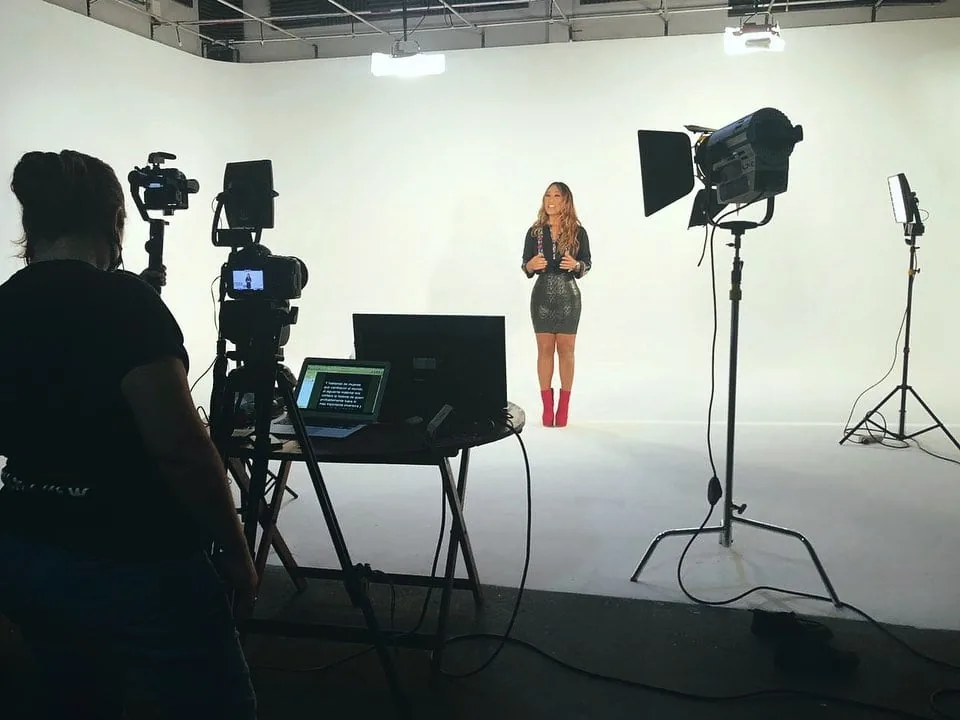

Production Support
For agencies and production companies that need a local partner to coordinate and execute on the ground in Paraguay.
View serviceProduction services built for real briefs, real timelines, and real operating needs.
From local production support to corporate video, event coverage, live streaming, drone filming, and institutional content, Maite Media helps clients execute projects in Paraguay with clarity and control.
Each service page is designed around a specific production need, not around broad keyword stacking or vague studio language.
For agencies and production companies that need a local partner to coordinate and execute on the ground in Paraguay.
View serviceFor brands, business teams, and institutions producing executive, internal, employer brand, or external-facing content.
View serviceFor conferences, launches, forums, corporate events, and institutional gatherings that need structured, professional coverage.
View serviceFor live, hybrid, and multi-camera event broadcasting with technical coordination and on-site support.
View serviceFor projects that need aerial visuals as part of a larger production or as a standalone capture service.
View serviceFor organizations producing field-based, donor-facing, stakeholder-facing, or public communication content.
View serviceSome clients already know the deliverable they need. Others are still defining the production model.
If your main challenge is execution in Paraguay, start with Production Support. If your main need is a specific content format, start with the relevant service page. If your team is selecting a partner based on internal workflow and procurement fit, visit Who We Work With.

Share the brief, timeline, and location. We will point you to the right service path.